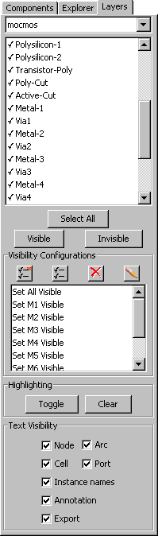

<!-- HEADER 4-5: Layer Visibility -->

<TABLE><TR><TD>
The nodes and arcs on the display are composed of more basic <I>layers</I>.
By using the "Layers" tab of the Side Bar,
you can control which layers are actually drawn.
<P>
The layers tab shows the layers in the current technology.
Changing the technology popup at the top of this tab will change the current technology.
When a layer is checked, it is visible.
You can turn the check on and off by double-clicking on a line.
You can also use the "Make Visible" and "Make Invisible" buttons.
The "Select All" button selects every layer so that the "Make..." buttons will work on the entire set.
<P>
Note that the layers are listed in order of height, and that you can select multiple entries in the list by using
the Shift key.
This means that you can easily control visibility by depth in the chip.
<P>
Two buttons in the middle control the <I>highlighting</I> of layers.
By selecting a layer and clicking "Toggle", it makes that layer stand out on the display.
Use "Clear" to return to normal layer display.
<P>
The bottom of the tab lets you choose which of the different types of text will be visible.
These different types of text are described more fully in <A HREF="chap06-08-01.html#chap06-08-01">Section 6-8-1</A>.
</TD><TD><CENTER></CENTER></TD></TR></TABLE>

<!-- TRAILER -->
